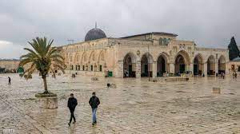

أولى القبلتين وثالث الحرمين الشريفين
يتعرض المسجد الأقصى منذ احتلاله عام 1967 لاعتداءات متواصلة، أبرزها اقتحامات وزراء ونواب بالكنيست وأفراد الشرطة والمستوطنين ومحاولتهم أداء طقوس دينية، منها تقديم القرابين داخل الحرم القدسي.
